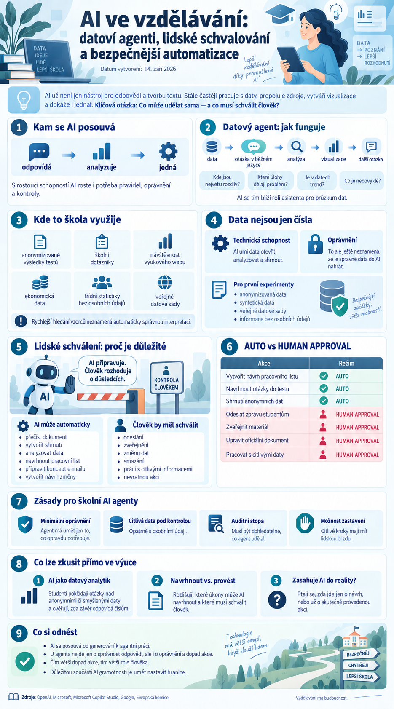

{kind=link}

Současný vývoj umělé inteligence ve vzdělávání ukazuje další důležitý posun. AI už dávno není jen nástroj, který odpovídá na otázky nebo vytváří text. Stále více pracuje s daty, propojuje různé zdroje, vytváří vizualizace a začíná provádět konkrétní akce.
To přináší nové možnosti, ale také novou otázku:
Které úkoly může AI vykonat sama a u kterých musí rozhodnutí zůstat na člověku?
Právě toto téma je nyní důležité jak pro školy, tak pro tvůrce vlastních vzdělávacích nástrojů.
ChatGPT Work posiluje práci s daty
OpenAI rozšiřuje ChatGPT Work o nástroje zaměřené na hlubší práci s daty.
Nový datový agent dokáže kombinovat více datových zdrojů, analyzovat strukturovaná i nestrukturovaná data a vytvářet z nich interaktivní přehledy a dashboardy.
Typický pracovní postup může vypadat například takto:
To je podstatný rozdíl oproti běžnému vytvoření grafu.
Uživatel se může ptát například:
- Kde jsou největší rozdíly mezi skupinami?
- Které typy úloh způsobují nejvíce problémů?
- Je v datech vidět určitý trend?
- Které výsledky jsou neobvyklé?
- Co by stálo za další ověření?
AI se tím blíží roli asistenta pro průzkum dat než pouhého generátoru tabulek.
Jak lze podobný princip využít ve škole
Ve školním prostředí se nabízí řada možností.
Například práce s:
- anonymizovanými výsledky testů,
- výsledky školních dotazníků,
- návštěvností výukového webu,
- ekonomickými daty,
- anonymními třídními statistikami,
- veřejně dostupnými datovými sadami.
Pro učitele může AI pomoci rychleji najít vzorce, které by při ruční práci s tabulkou nebyly na první pohled viditelné.
To ale neznamená, že výsledek AI automaticky představuje správnou interpretaci.
Data nejsou jen čísla
Při používání AI nad školními daty je potřeba rozlišovat dvě věci:
a
oprávnění tato data vůbec použít
To, že nástroj dokáže otevřít tabulku se jmény studentů, ještě neznamená, že je správné ji do AI služby nahrát.
Pro první experimenty proto dává smysl používat:
- anonymizovaná data,
- syntetická data,
- veřejné datové sady,
- informace bez osobních údajů.
U školních dat by vždy mělo být jasné, kdo je zpracovává, za jakým účelem a v jakém prostředí.
Microsoft přidává lidské schválení akcí agentů
Velmi důležitým směrem je také rozvoj bezpečnostních mechanismů v Microsoft Copilot Studio.
Microsoft zavádí možnost vyžadovat lidské schválení před tím, než agent použije určitý nástroj nebo provede citlivější akci.
Agent tedy může například připravit návrh, ale před samotným provedením se zastaví.
Uživatel následně rozhodne, zda akci:
- povolí,
- povolí pouze pro danou relaci,
- odmítne.
Tento princip může být použit například před:
- odesláním e-mailu,
- změnou dokumentu,
- spuštěním externí akce,
- použitím nástroje s vyššími oprávněními.
Proč je lidské schválení tak důležité
U klasického chatbota je typickou chybou nesprávná odpověď.
U agenta může být problém vážnější.
Pokud agent například:
- odešle chybný e-mail,
- změní dokument,
- smaže data,
- publikuje materiál,
- provede nechtěnou automatizaci,
chyba už není pouze textová.
Byla skutečně provedena.
Proto dává smysl rozdělit agentní práci do dvou kategorií.
AI může vykonat automaticky
- přečíst dokument,
- vytvořit shrnutí,
- analyzovat data,
- navrhnout pracovní list,
- připravit koncept e-mailu,
- vytvořit návrh změny.
Člověk by měl schválit
- odeslání,
- zveřejnění,
- změnu dat,
- smazání,
- práci s citlivými informacemi,
- nevratnou akci.
AI připravuje. Člověk rozhoduje o důsledcích.
AUTO a HUMAN APPROVAL
Při návrhu vlastního AI workflow lze použít velmi jednoduché značení.
Každou akci rozdělíme například do dvou kategorií:
AI může akci provést sama.
HUMAN APPROVAL
Před provedením musí přijít potvrzení člověka.
Takové rozdělení je jednoduché, ale velmi účinné. Návrh pracovního listu, otázek do testu nebo shrnutí anonymních dat může zůstat v režimu AUTO. Odeslání zprávy studentům, zveřejnění materiálu, úprava oficiálního dokumentu a práce s citlivými daty patří do režimu HUMAN APPROVAL.
Co z toho plyne pro vlastní školní AI agenty
Pokud škola nebo učitel vytváří vlastní agentní workflow, neměla by hlavní otázka znít:
Co všechno agent dokáže?
Lepší otázka je:
Co mu skutečně potřebujeme dovolit?
Princip minimálních oprávnění je zde zásadní.
Agent, který má pouze přečíst tematický plán, nepotřebuje oprávnění mazat dokumenty.
Agent, který připravuje návrh e-mailu, nemusí mít možnost ho automaticky odeslat.
Agent, který analyzuje anonymní výsledky, nepotřebuje přístup k osobním složkám studentů.
Čím přesněji jsou schopnosti omezené, tím bezpečnější systém vzniká.
Microsoft sjednocuje AI nástroje a roadmapu
Microsoft zároveň postupně sjednocuje vývoj Copilotu, agentů a dalších AI funkcí do společné roadmapy.
To ukazuje širší trend: AI ekosystémy už nejsou založené pouze na jednom modelu.
Microsoft například kombinuje modely od různých poskytovatelů.
Pro školy a tvůrce vlastních systémů z toho plyne zajímavý princip:
nikoli:
máme jeden model → použijeme ho na všechno
Různé úkoly mohou totiž vyžadovat různý typ modelu, rychlost, cenu nebo úroveň zabezpečení.
NotebookLM a Gemini Notebook
U Gemini Notebooku se v posledních dnech neobjevila změna, která by zásadně měnila současný způsob práce.
Nadále zůstává silným nástrojem především tam, kde chceme vytvořit řízený studijní prostor nad konkrétními zdroji.
Pro školství je právě tento způsob práce stále velmi zajímavý:
Tento model má oproti neomezenému chatbotu výhodu v lepší kontrole nad tím, z čeho AI čerpá.
Co lze vyzkoušet přímo ve výuce
1. AI jako datový analytik
V občanské nauce, ekonomice nebo matematice lze studentům dát malou anonymní nebo smyšlenou tabulku.
Například:
- výsledky průzkumu,
- rodinný rozpočet,
- data o nezaměstnanosti,
- volební statistiky,
- školní dotazník bez osobních údajů.
Nejdříve mají studenti napsat tři otázky, které chtějí z dat zjistit.
Teprve potom použijí AI.
Nakonec musí ověřit, zda závěr AI skutečně odpovídá číslům.
Cílem není vytvořit graf, ale naučit se kriticky pracovat s interpretací dat.
2. Navrhnout versus provést
Studentům lze představit několik úkolů a nechat je rozhodnout:
Může AI tuto akci udělat sama, nebo by ji měl potvrdit člověk?
Například:
- vytvořit návrh e-mailu,
- e-mail odeslat,
- navrhnout změnu prezentace,
- zveřejnit prezentaci,
- vytvořit shrnutí,
- smazat dokument.
Je to jednoduchá aktivita, ale velmi dobře vysvětluje rozdíl mezi chatbotem a agentem.
3. Sledujte, kdy AI zasahuje do reality
Při práci s jakýmkoli AI nástrojem lze zavést otázku:
Je výstup pouze návrh, nebo už AI něco skutečně změnila?
Tato jediná otázka výrazně zvyšuje bezpečnost práce s agentními nástroji.
Co si z aktuálního vývoje odnést
Umělá inteligence se rychle posouvá od jednoduchého generování k agentní práci.
Nejdříve uměla:
Potom začala:
Dnes stále častěji dokáže:
A právě zde se mění pravidla hry.
U chatbotu řešíme hlavně správnost odpovědi. U agenta musíme řešit také:
- oprávnění,
- rozsah přístupu,
- auditní stopu,
- možnost zastavení,
- lidské schválení.
Pro školy je proto velmi důležité zavést jednoduchý princip:
AI může samostatně připravovat a analyzovat. Čím větší dopad má konkrétní akce, tím větší roli musí mít člověk.
Budoucnost školní AI proto nebude jen o stále schopnějších modelech.
Bude také o tom, jak dobře dokážeme nastavit jejich hranice.
A právě to může být jedna z nejdůležitějších dovedností nové generace AI gramotnosti.
Zdroje: OpenAI, Microsoft, Microsoft Copilot Studio, Google, Evropská komise.